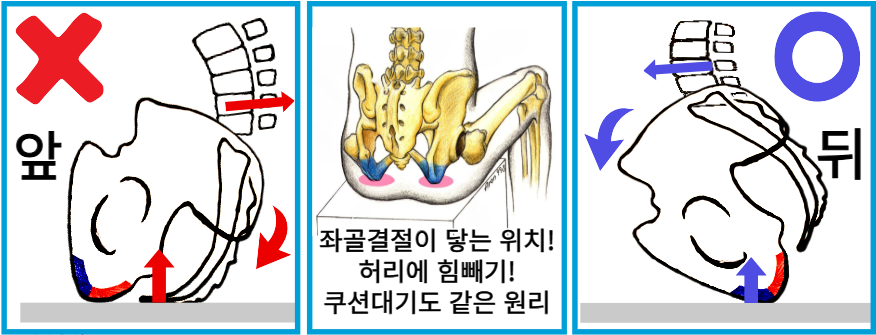

[바디올 골반 롤링법 (척추중립법)]

좌골앉기라고도 알려진 이 방법은 힘을 뺀 상태에서 척추 위치를 올바르게 유지하는 핵심 기술입니다.
이 자세가 편안해지면 바디올의 교정 치료는 성공적으로 마무리됩니다.
- 1. 반드시 의자에 앉아서 진행해야한다. 다리와 몸통이 이루는 각도가 90도정도는 되어야하기 때문이다.
- 2. 자동차 좌석이나, 너무 푹신한 소파에 앉을때에는 골반롤링이 불가능하다.
- 3. 양반다리를 한상태에서는 불가능하다.
- 4. 골반롤링이 불가능할때에는 반드시 쿠션을 대줘야한다.
이유는 간단하다. 허벅지와 복부가 가까워질수록(허리가 숙여지거나 다리를 높이 들어올릴수록) 골반은 뒤로 돌아가며 허리뼈를 뒤로 밀어내고 등과 허리를 굽게 만들기 때문에 척추가 올바른 위치로 가는게 불가능해진다.
- 1 엉덩이 아래의 딱딱한 뼈인 좌골이 바닥에 닿는 감각을 느끼세요.
- 2 골반을 가볍게 앞쪽으로 돌려, 좌골의 앞부분이 바닥에 닿게 합니다.
- 3 그 위치를 무게중심 축으로 삼아 온몸의 힘을 완전히 뺍니다.
- 4 몸의 어떤 부위에도 과도한 긴장이 들어가지 않아야 성공입니다.
힘을 주지 않아도 바른 척추 위치가 유지되는 이 느낌은 쿠션을 대었을 때의 감각과 매우 유사합니다. 다만 감각적인 습득이 무엇보다 중요하므로, 가급적 원장단에게 직접 교육받으시는 것을 강력히 추천드립니다.